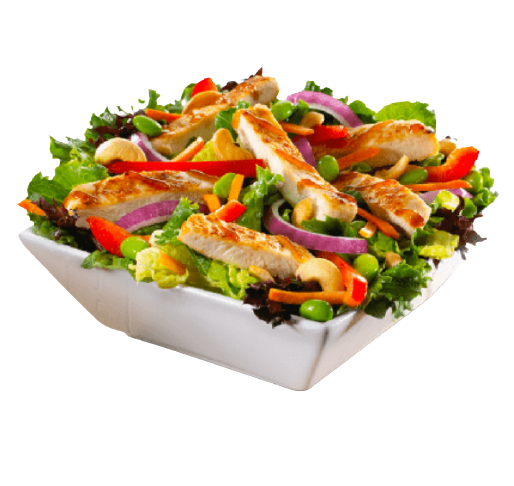

Bon appétit
No more tension!
lead a healthy and sound life
with Bon appétit
To lead everyone needs to feed fresh and healthy food. Here we offer you fresh food with healthy recipes. So, have faith and be with us. We are the best one you are searching for.